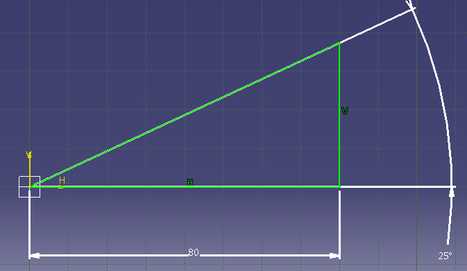
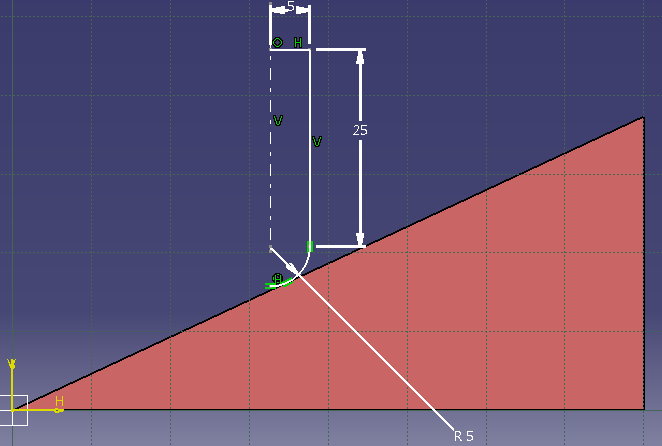
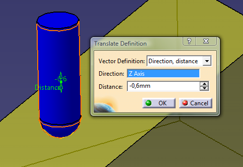
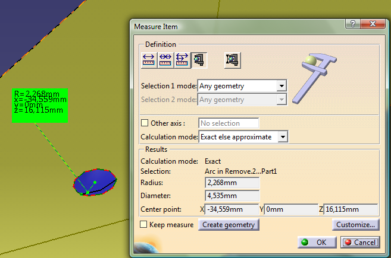
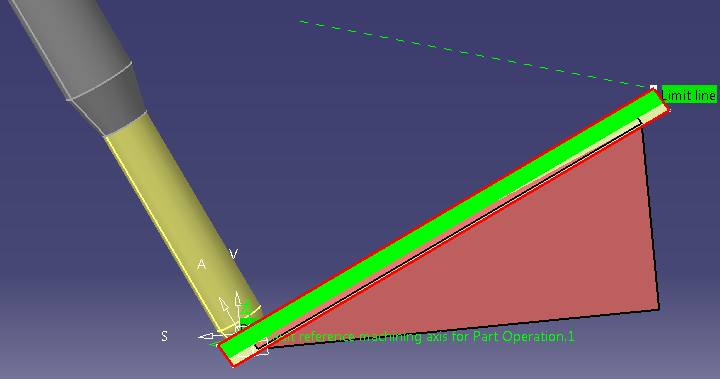
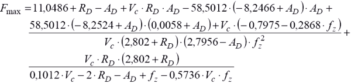

|
Eðimli yüzeylerde Dw çapýný bulmak için CAD/CAM yazýlýmlarýndan yararlanýlabilir. Küresel takýmlarýn büyük bir çoðunlukla eðimli yüzeylerin iþlenmesinde kullanýldýðý göz önüne alýndýðýnda CAD/CAM yazýlýmlarý ile temsili Dw çapýnýn bulunmasý önem kazanmaktadýr. Aþaðýdaki resimlerde böyle bir uygulama gösterilmiþtir.

Resim 5. Ýstenen eðim açýsýnda bir üçgen çizimi

Resim 6. Açýlý yüzeye tam teðet istenen çapta temsili parmak freze çizimi

Resim 7. Temsili talaþ derinliðinin verilmesi

Resim 8. Temsili takýmýn yaptýðý izin ölçülmesi (Dw)
3 eksenli CNC dik iþleme merkezlerinde eðimli yüzeylerin iþlenmesinde yukarýda da görüldüðü üzere sürekli olarak Dw çapý deðiþirken 5 eksenli tezgahlarda böyle bir durum söz konusu olmamaktadýr. Bunun sebebi; fener milinin istenen açýya dönebilme kabiliyeti sayesinde istenirse sürekli olarak yüzeye dik kesim yapýlabilme özelliðidir. 5 eksenli tezgahlarýn en büyük avantajlarýndan bir tanesi budur.

Resim 9. 5 eksen iþlemede takým pozisyonu
Resim 9 da görüldüðü gibi fener miline baðlý olarak kesici takýmýn iþ parçasý normaline göre talaþ kaldýrabilmesi sonucunda efektif çapta eðim açýsýndan kaynaklanan herhangi bir deðiþme olmamaktadýr. (1) ve (2) nolu formüller bu iþleme türünde yüzey normaline göre yapýlan iþlemlerde geçerlidir.
2.3. Küresel takýmlarda kesme kuvveti
Frezeleme iþlemleri esnasýnda oluþan kesme kuvvetleri; doðrudan ya da dolaylý olarak takým aþýnmasý, takým ömrü, yüzey kalitesi vb. parametreleri etkilemektedir. Küresel takýmlarla frezeleme; özellikle otomotiv, havacýlýk ve kalýpçýlýk endüstrisinde oldukça yaygýn bir kullaným alaný bulmaktadýr. CAD/CAM sistemlerinin ve CNC tezgahlarýnýn son zamanlardaki geliþimine paralel olarak oldukça kompleks yüzeylerin iþlenmesi ihtiyacý küresel takýmlarýn kullaným alanýný geniþletmektedir. Bütün bunlardan ötürü yaygýn kullaným alanýna sahip olan küresel takýmlarýn uygun parametrelerle iþlenmesi ihtiyacý; kesme kuvvetlerinin önceden tahmin edilmesine yönelik bir çok araþtýrmayý beraberinde getirmiþtir. Kesme kuvvetlerinin önceden belirlenmesi, proses planlamasýndan takým aþýnmasýna, takým deformasyonuna, takým ömrünün önceden belirlenebilmesine ve bunlarýn sonucunda daha kaliteli parçalar üretilmesine imkan saðlamaktadýr [7].
Bu konu üzerine bir literatür araþtýrmasý yapýldýðýnda neredeyse bütün formüllerin lineer olmadýðý ve diferansiyel hesaplara baðlý olduðu ortaya çýkmýþtýr. Ancak ortalama %5 hata payý bulunan lineer bir formül aþaðýdaki þekilde ifade edilmektedir.
 (3)
3 no'lu formülde;
RD = Yanal kayma mesafesini (mm)
AD = Talaþ derinliðini (mm)
VC = Kesme hýzýný (m/dak)
fZ = Diþ baþýna ilerleme miktarýný (mm/diþ)
ifade etmektedir [7].
|